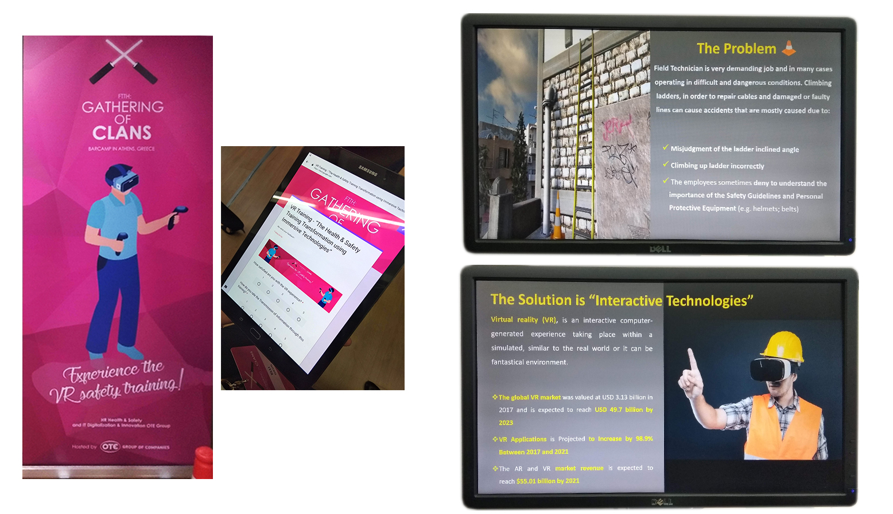

I work with Unity (C#) and SDKs for Oculus Rift, Gear VR and Google VR . Part of my current role as an immersive designer/developer is to create POCs for various use cases, consult or co-develop with startups that we are collaborating with and conduct testing to validate concepts/ideas/products prior to release.
One of my prototypes is VR connectivity (showing bellow). It is a gamified VR internet connectivity experience in a home space, to improve customers/users understanding on smart home connectivity. The game intrigues them to position items - hubs - to improve the signal in a virtual home. I worked with various assets and libraries to enable objects' snap to point and physics, and reduce nausea.
Cosmote plans to build Virtual Store(s) to provide VR experience to the customers and enable distance purchases through immersive media.
The same content is used to build a platform for training sales staff through VR.
Some of my prototyping work in Unity using 360 video and teleporting
Another project co-developed with the startup Enneas is a virtual training for field technicians (build on Oculus Rift). The purpose of the training is to gamify the health and safety regulations to train technicians on the field work and prevent from accidents.
The training includes wearing virtual helmets, positioning safety items and following health and safety regulations for the stair.
I assisted in the technical development of the whole project and acted as an intermediate between the health and safety team and the start up to make sure all requirements are met. I also worked on particular UI features and conducted extensive user testing with the startup to reasure the product is user-frienly for various user groups.
